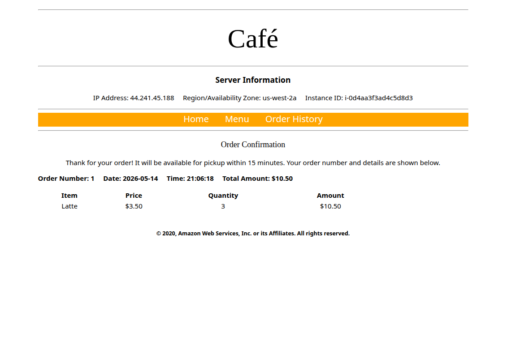
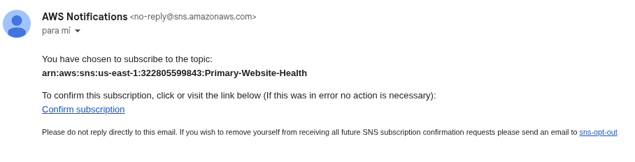
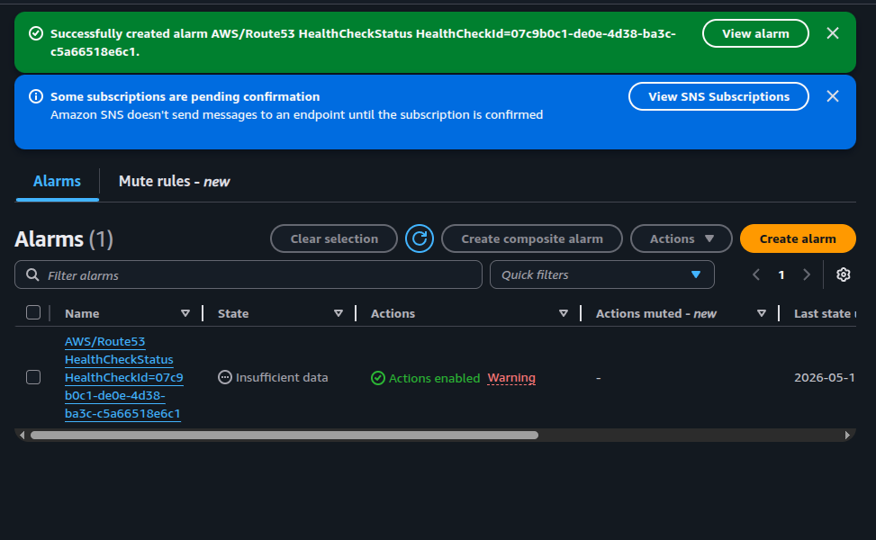
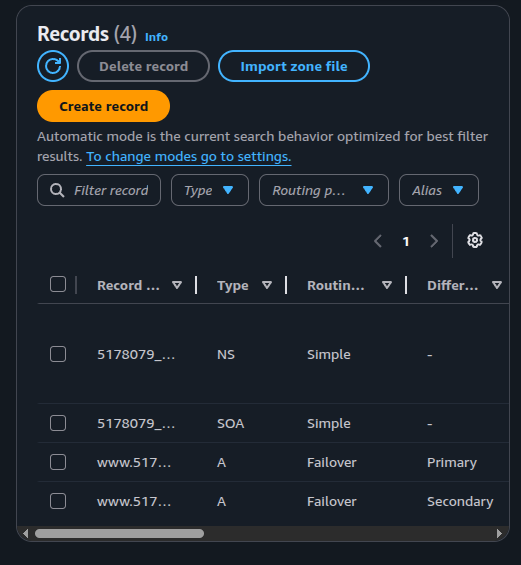
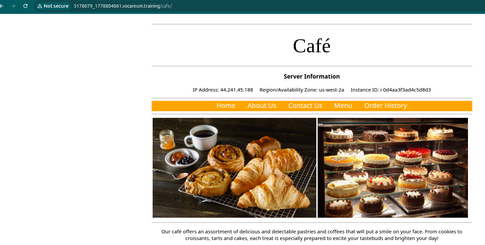

What was configured
A Route 53 hosted zone with Failover routing policy on two A records, an HTTP health check on the primary instance, and a CloudWatch alarm that publishes to an SNS email topic when the primary goes down.
Configure DNS failover between two EC2 instances in different Availability Zones using a Route 53 health check, primary/secondary A records, and a CloudWatch alarm wired to SNS email notifications.
Two identical café web servers were pre-deployed in us-west-2a and us-west-2b. The lab work consisted of layering Route 53 on top: one health check pointing at the primary instance, two failover A records, one CloudWatch alarm, and one SNS topic for email notifications.
A Route 53 hosted zone with Failover routing policy on two A records, an HTTP health check on the primary instance, and a CloudWatch alarm that publishes to an SNS email topic when the primary goes down.
Resolved the public domain and confirmed it returned the primary IP. Then stopped
CafeInstance1 and verified that the health check flipped to Unhealthy,
the alarm fired, and the email was delivered.
The lab guide referenced an external architecture diagram that did not survive the document conversion. The components and request flow are documented below instead.
| Component | Role | Location |
|---|---|---|
| CafeInstance1 | Primary web server (LAMP + café site). Target of the health check. | us-west-2a |
| CafeInstance2 | Secondary web server. Identical content; serves traffic only when the primary is unhealthy. | us-west-2b |
| Route 53 hosted zone | Holds the failover A records for www.<domain>. |
Global service |
| Route 53 health check | HTTP probe against the primary's public IP on path /cafe. |
Runs from us-east-1 (see note below) |
| CloudWatch alarm | Monitors HealthCheckStatus; publishes to SNS on ALARM. |
us-east-1 |
SNS topic (Primary-Website-Health) |
Fan-out to the subscribed email address. | us-east-1 |
us-west-2, but the
Route 53 health check and its CloudWatch alarm are surfaced in us-east-1.
That is expected — Route 53 is a global service and its health-check metrics are
published in us-east-1. The ARNs visible in the SNS and alarm screenshots
reflect that.
Request flow: client →
www.<domain>.vocareum.training/cafe/ → Route 53 evaluates the health
check → returns the IP of CafeInstance1 (Primary) while healthy, or
falls back to CafeInstance2 (Secondary). On state change, CloudWatch
publishes to SNS, which emails the subscribed address.
Four tasks: verify the pre-deployed instances, build the health check + alarm + SNS, create the failover A records, and trigger a real failover.
/cafe and confirmed both render the same
site. The Server Information block on each page reports the
instance's IP, region, AZ, and instance ID — used to confirm the AZ split.us-west-2a
with IP 44.241.45.188 (this is the future primary).
Primary-Website-Health with:
/cafePrimary-Website-Health)
with the email recipient.
arn:aws:sns:us-east-1:…:Primary-Website-Health.
AWS/Route53 HealthCheckStatus created — initial state Insufficient data while it gathers metrics.www)
but distinct Record IDs — Route 53 requires unique IDs to tell
failover siblings apart.| Field | Primary record | Secondary record |
|---|---|---|
| Record name | www |
www |
| Type | A | A |
| Value | Public IPv4 of CafeInstance1 (us-west-2a) | Public IPv4 of CafeInstance2 (us-west-2b) |
| TTL | 15 s |
15 s |
| Routing policy | Failover | Failover |
| Failover type | Primary | Secondary |
| Health check | Primary-Website-Health |
(none — by design) |
| Record ID | FailoverPrimary |
FailoverSecondary |

A · Failover records (Primary / Secondary).Part A — Normal state:
visited http://www.<hosted-zone>.vocareum.training/cafe/ in the
browser. The page resolved through Route 53 to the primary's IP, and the Server
Information block confirmed us-west-2a — i.e., the request is being
served by CafeInstance1.

5178079_1778804061.vocareum.training/cafe/) resolving to the primary in us-west-2a.Part B — Forced failover:
stopped CafeInstance1 from the EC2 console. After two failed probes
(~20 s with Fast interval), the health check flipped to Unhealthy.
Refreshing the public URL after the TTL expired returned the page served from
us-west-2b — Route 53 had switched to the secondary record.
No own screenshot of the secondary serving the page or of the Unhealthy state
was captured during the lab.
Part C — Notification:
the CloudWatch alarm transitioned OK → ALARM and SNS published to the
email subscription. The delivered message includes the alarm ARN, the threshold
logic, and the timestamp of the transition.
OK → ALARM, threshold crossed (3 of last 3 datapoints < 1.0), SNS topic Primary-Website-Health.Record IDs
(e.g. FailoverPrimary / FailoverSecondary) — that is
how Route 53 distinguishes them internally.15 s) speeds up propagation during the test, but
charges more Route 53 queries. Tune it per workload.us-east-1 even when the targets are in another region.
DNS-based failover is the cheapest multi-AZ fault tolerance pattern available — no load balancer, no listener, no rules. The trade-off is the TTL window: clients keep hitting the dead IP until their resolver re-queries.
For latency-sensitive workloads, an Application Load Balancer with cross-AZ targets is a better fit; for periodic / lower-traffic services, Route 53 failover is hard to beat on simplicity. The SNS email is good enough as a poor-man's incident channel — forwarding the same SNS topic to a Lambda or Slack webhook is the natural next step.